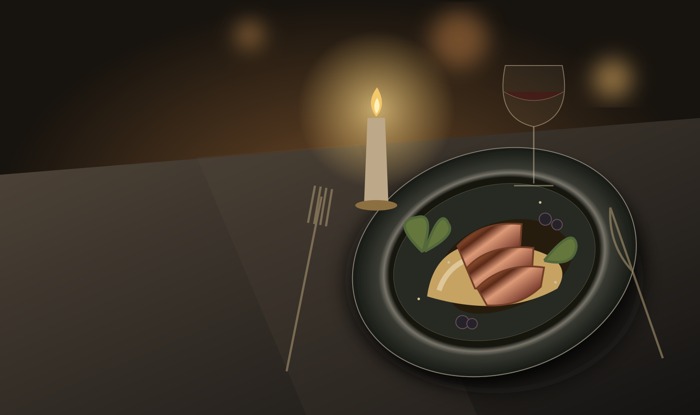

Foie Gras Torchon
£18Brioche, fig preserve, a whisper of Sauternes

EST. 2018 — MAYFAIR, LONDON
Contemporary French cuisine.
A little mystery. An unforgettable evening.
“Every plate is a conversation
between the seasons and the chef.”
EXECUTIVE CHEF
Laurent trained under three Michelin-starred chefs before opening Maison Noir in 2018. His menu changes with the seasons — built around relationships with local farmers and coastal suppliers.
At the heart of every dish is one simple belief: exceptional ingredients need a thoughtful hand, and room to speak.
Chef biography and restaurant details are part of this fictional concept.
MORE THAN A MEAL
An intimate space for the people and moments that matter. Plan a gathering around your table.
A seasonal journey, course by considered course. Let the kitchen guide your evening.
Old-world classics meet unexpected discoveries, chosen to bring every course into focus.
EDITORIAL MOODBOARD · NOT PRESS ENDORSEMENTS
Illustrative diner stories
★★★★★“The tasting menu was simply extraordinary. Every course told a story.”
MARCUS T. — APRIL 2026
★★★★★“That rare place where the whole evening feels beautifully considered.”
ELENA R. — CONCEPT TESTIMONIAL
★★★★★“Quietly exceptional, from the first welcome to the last spoonful.”
JAMES L. — CONCEPT TESTIMONIAL
YOUR EVENING AWAITS
We recommend booking 2–4 weeks in advance for weekends.
Or call: +44 20 7123 4567 · Concept contact details